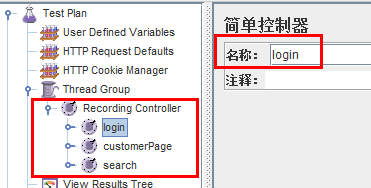

继之前关于如何通过jmeter录制http请求的文章。俗话说“a good beginning is half done”，录制起了个好头，后续脚本编辑更为重要。
脚本---基础编辑篇1(原创)_files/Image [1].png)
脚本---基础编辑篇1(原创)_files/Image [2].png)
脚本---基础编辑篇1(原创)_files/Image [3].png) @
@脚本---基础编辑篇1(原创)_files/Image [4].png)
脚本---基础编辑篇1(原创)_files/Image [5].png)
脚本---基础编辑篇1(原创)_files/Image [6].png)
脚本---基础编辑篇1(原创)_files/Image [7].png)
脚本---基础编辑篇1(原创)_files/Image [8].png)
脚本---基础编辑篇1(原创)_files/Image [9].png)
其实不少做性能测试的同行对lr都非常依赖，主要是因为几乎国内所有的测试培训机构都是以lr作为模板模板，所以一代传一代。当然工具只是个手段，是个入门的途径，对于做性能测试的人来说应该不限于此。
在开始脚本编辑篇前，我分享下一个老外编写的一篇文章《Why Apache JMeter is better than HP Load Runner?》和大家分享下，同时也可以让大家对jmeter的学习更加有动力：
- jmeter界面创建用户场景更加便捷-----jmeter的树形结构直观的展现了一切，通过逻辑组件也更加容易编辑脚本，并且也可以将你需要的复杂用户场景进行编码化。
- LR有非常强大的分析能力，但是事实上我发现我需要的90%内容jmeter都可以带给我，同时我也可以把他的测试数据保存在DB、文件里，使用awk或者excel得到想要的数据。
- 我可以通过命令行执行jmeter。
- jmeter本身是个轻量级工具，意味着我可以仅仅使用5秒时间就将他安装在一台新电脑上。
- jmeter也是便携的，30Mb的大小可以随身携带。只要有java的地方就通行无阻。
- 用过LR的人很多情况下都被限于内置函数，而jmeter的灵活性不言而喻。例如正则表达式，LR里的web_reg_save_para仅仅是一个被缩水的东东，获取的东西无法分组处理
- jmeter对于用户来说不需要有license的顾虑，可以放心大胆使用，一切都是free
- jmeter的debug功能是如此简单、有用
- 在jmeter里操作数据库也是如此的简单，但LR很复杂
- 如果我使用jmeter，我不需要使用windows......听上去很另类，但是我测试95%的东西都是在linux上运行。
- LR的recording log没有jmeter的查看结果树那样的清晰的展示response code、header、url、response等信息
==========================脚本编辑1=================================
1.把修改事务控制器的名字，让其显而易懂

2.如果请求的名字一模一样，适当的改名
如上图，可以改成/Apex/AccountBu1、2、3以此类推，因为聚合报告是根据名称聚合，所以最好进行改名，并且与事务名称不要相同
3.根据录制的结果树，寻找检查点并设置检查点
- 进入控制台的查看结果树，并切换成HTML显示模式
- 切换到响应结果页，并找到需要设置的检查点
@- 找到对应的请求，并设置断言
4.回放并且观察测试计划区域的查看结果树
5.如果有没有通过，一般都是因为关联没有找到。
- 找到没有通过的请求，并且定位关联
- 复制乱码，到控制台的查看结果树找到对应的请求，在该请求上面的response中找寻一样的文字
- 找到后把这段内容的左边和右边复制出来
- 在对应的请求处增加正则表达提取式
- 把对应的内容替换成上图的变量名
6. 以此类推直至脚本全部回放成功
==============================脚本编辑1结束===============================================